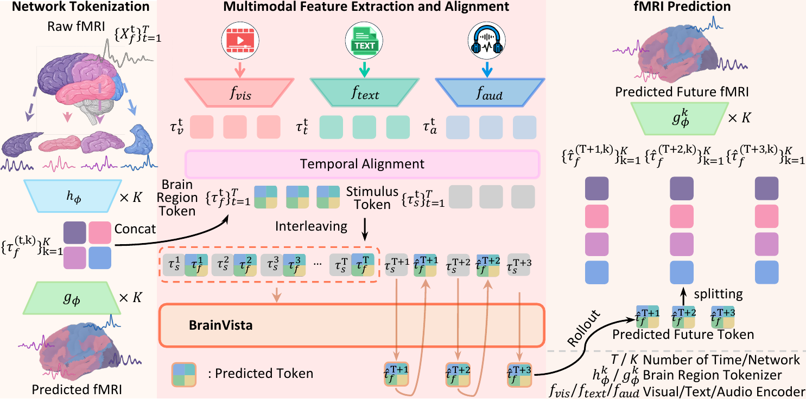
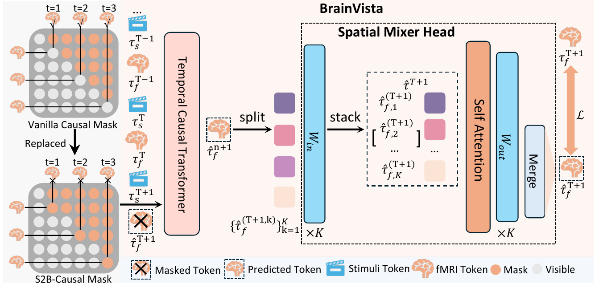
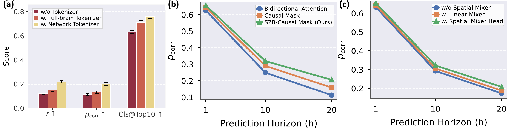
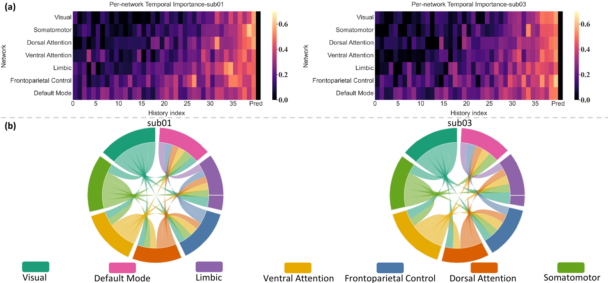
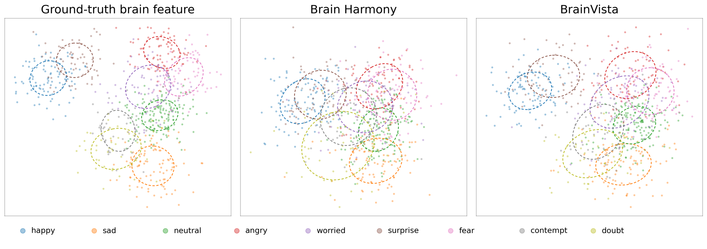

TL;DR BrainVista forecasts future fMRI states from brain history and stimulus tokens aligned to each prediction query, and rolls out recursively without access to future ground-truth fMRI.

Naturalistic fMRI offers a time-resolved window into cortical dynamics during continuous multimodal experience, where future brain states are jointly governed by endogenous neural context and exogenous sensory drive. Forecasting such dynamics, however, remains challenging because fast-changing stimulus streams must be reconciled with the sluggish hemodynamic BOLD response, while cortical activity is organized across functionally heterogeneous brain networks. To address these challenges, we introduce BrainVista, a multimodal autoregressive framework for observed-stimulus conditional brain-state forecasting. BrainVista predicts future fMRI states from the history of brain activity and stimulus tokens temporally aligned to each prediction query, enabling autoregressive prediction without access to future ground-truth fMRI states. Recursive rollout provides a within-run predictive test of brain-state evolution under continuing sensory input. Specifically, we combine Network-wise Tokenizers for functionally structured brain representations, a Spatial Mixer Head for cross-network interaction refinement, and Stimulus-to-Brain (S2B) masking to preserve temporally causal stimulus–brain conditioning while preventing future brain-state leakage and stimulus look-ahead. We evaluate BrainVista on Algonauts 2025, CineBrain, and HAD, three large-scale naturalistic fMRI benchmarks, under long-horizon conditional autoregressive forecasting. BrainVista consistently outperforms baselines, improving pattern correlation by 10.8% and 9.4% relative to the strongest baseline on Algonauts 2025 and CineBrain, respectively.
Independent tokenizer–detokenizer pairs for each functional network encode fMRI into compact, functionally structured brain region tokens instead of one homogeneous whole-brain code.
Stimulus tokens form a stimulus-only causal stream; brain tokens attend to causally available stimuli and past brain tokens. The target brain position never sees target or future fMRI.
Multi-head self-attention across the network-wise components of the predicted token refines cross-network interactions before decoding to fMRI space.

Conditional autoregressive forecasting with horizon H = 20. ARX baselines receive matched past fMRI states and aligned stimulus features. Best and second-best are shown in red and blue.
| Algonauts 2025 | CineBrain | HAD | |||||||
|---|---|---|---|---|---|---|---|---|---|
| Model | r | pcorr | Cls@Top10 | r | pcorr | Cls@Top10 | r | pcorr | Cls@Top10 |
| Non-ARX references | |||||||||
| TRIBE | 0.1379 | 0.1323 | 0.6823 | 0.4742 | 0.3012 | 0.8560 | 0.2685 | 0.1845 | 0.7012 |
| MindSimulator | 0.1432 | 0.1478 | 0.6919 | 0.4856 | 0.3235 | 0.8615 | 0.2610 | 0.1960 | 0.7105 |
| BrainLM | 0.1191 | 0.0829 | 0.6493 | 0.4633 | 0.2762 | 0.8478 | 0.2465 | 0.1450 | 0.6912 |
| BrainJEPA | 0.1493 | 0.0916 | 0.6812 | 0.4941 | 0.2445 | 0.8455 | 0.2515 | 0.2353 | 0.7321 |
| Brain Harmony | 0.1867 | 0.1466 | 0.7031 | 0.5397 | 0.3484 | 0.8642 | 0.2642 | 0.2688 | 0.7685 |
| ARX baselines | |||||||||
| Ridge-ARX | 0.1762 | 0.1584 | 0.7106 | 0.5483 | 0.4016 | 0.8678 | 0.2630 | 0.2327 | 0.7446 |
| LSTM-ARX | 0.1905 | 0.1718 | 0.7223 | 0.5614 | 0.4529 | 0.8735 | 0.2642 | 0.2605 | 0.7631 |
| TemporalCNN-ARX | 0.1968 | 0.1756 | 0.7268 | 0.5732 | 0.4724 | 0.8786 | 0.2654 | 0.2741 | 0.7762 |
| Transformer-ARX | 0.2026 | 0.1819 | 0.7315 | 0.5897 | 0.4978 | 0.8837 | 0.2678 | 0.2724 | 0.7836 |
| BrainHarmony-AR | 0.2065 | 0.1887 | 0.7392 | 0.5988 | 0.5156 | 0.8893 | 0.2685 | 0.2769 | 0.7894 |
| BrainVista (ours) | 0.2183 | 0.2090 | 0.7619 | 0.6315 | 0.5643 | 0.9012 | 0.2739 | 0.2950 | 0.7998 |
Pattern correlation on Algonauts 2025 under conditional autoregressive rollout. S2B improves over vanilla causal masking by 0.008 at H = 1 and by 0.067 at H = 20.
| Mask | H = 1 | H = 5 | H = 10 | H = 15 | H = 20 |
|---|---|---|---|---|---|
| Bidirectional attention | 0.545 | 0.361 | 0.245 | 0.169 | 0.113 |
| Vanilla causal mask | 0.552 | 0.380 | 0.270 | 0.195 | 0.142 |
| S2B mask | 0.560 | 0.403 | 0.310 | 0.251 | 0.209 |



@inproceedings{yin2026brainvista,
title = {BrainVista: Modeling Naturalistic Brain Dynamics as Multimodal Next-Token Prediction},
author = {Yin, Xuanhua and Zhao, Runkai and Yao, Lina and Cai, Weidong},
booktitle = {Advances in Neural Information Processing Systems (NeurIPS)},
year = {2026}
}